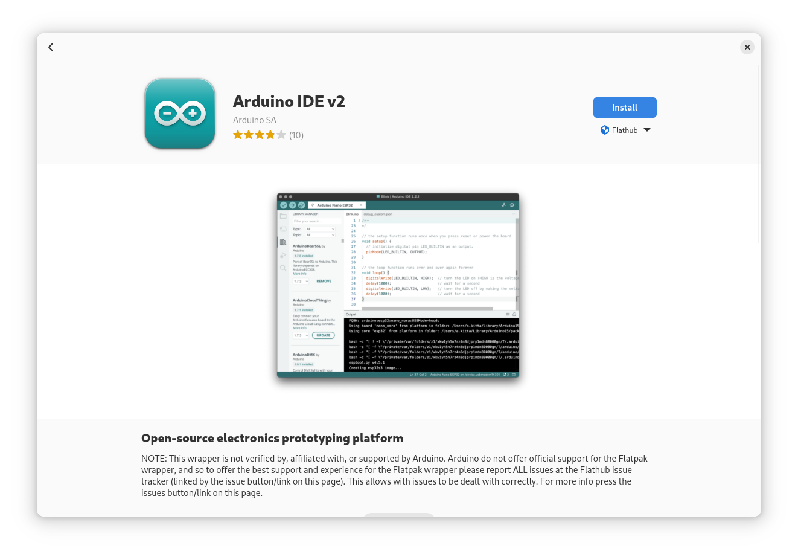
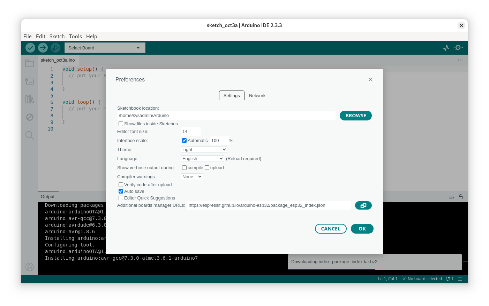

Post Installation
Gnome tweak
Install VS code Editor
Install NERD Fonts
Download or install the Nerd Fonts with the Nerd Fonts Installer script. To install Nerd Fonts, run the following script.
bash -c "$(curl -fsSL https://raw.githubusercontent.com/officialrajdeepsingh/nerd-fonts-installer/main/install.sh)"
Install python3
Install NodeJs
Install Arduino IDE2

https://flathub.org/apps/cc.arduino.IDE2
Arduino Esp32 Git core
https://docs.espressif.com/projects/arduino-esp32/en/latest/installing.html
- copy link to arduino ide preference
KVM and Vagrant
egrep -c '(vmx|svm)' /proc/cpuinfo
sudo dnf install @virtualization
sudo dnf install qemu-kvm libvirt libvirt-client virt-top virt-install virt-manager virt-viewer libguestfs-tools
sudo dnf install libvirt libvirt-daemon-kvm qemu-kvm virt-manager guestfs-browser libguestfs-tools python-libguestfs virt-top virt-install bridge-utils virt-viewer
sudo systemctl start libvirtd
sudo systemctl enable libvirtd
sudo usermod -aG libvirt sysadmin
sudo virsh list --all
Open the file /etc/libvirt/libvirtd.conf
sudo vim /etc/libvirt/libvirtd.conf
Set the UNIX domain socket group ownership to libvirt, (around line 85)
unix_sock_group = “libvirt”
Set the UNIX socket permissions for the R/W socket (around line 108)
unix_sock_rw_perms = “0770”
Restart libvirt daemon after making the change.
sudo systemctl restart libvirtd.service
Error: The rpm for Fedora defaults the connection to libvirt to use the session connection qemu:///session which does not support creating networks, though you can use networks that have been already created.
Network 192.168.33.10 is not available. Specify available network
name, or an ip address if you want to create a new network.
Vagrant.configure("2") do |config|
config.vm.provider :libvirt do |libvirt|
libvirt.qemu_use_session = false
# if the above doesn't work, try uncommenting the following instead
#libvirt.uri = 'qemu:///system'
end
end
Install Thai Language Fonts
sudo dnf install tlwg-*
sudo dnf install google-noto-sans-thai-fonts ibm-plex-sans-thai-fonts thai-arundina-sans-fonts thai-arundina-sans-mono-fonts thai-arundina-serif-fonts
https://github.com/opendevbook/thai-font-collection
install windows fonts
sudo dnf install curl cabextract xorg-x11-font-utils fontconfig -y
sudo rpm -i https://downloads.sourceforge.net/project/mscorefonts2/rpms/msttcore-fonts-installer-2.6-1.noarch.rpm
starship
Install Multi Media
sudo dnf install vlc
sudo dnf install gstreamer1-plugins-{bad-\*,good-\*,base} gstreamer1-plugin-openh264 gstreamer1-libav --exclude=gstreamer1-plugins-bad-free-devel
sudo dnf install lame\* --exclude=lame-devel